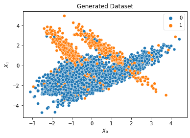
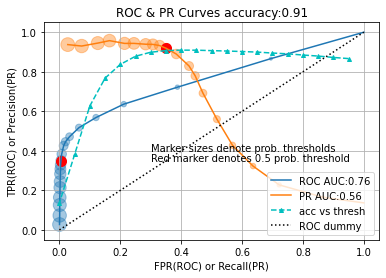

Roc Curve Step by Step
...with precision-recall curve thrown in
The ROC (Receiver Operator Characteristic) curve dates to the time of the World War 2 and refers to the performance of radar operators along with their radar scopes for correctly identifying enemy aircraft. Today, it refers to how fast a classifier identifies true positive cases or how consistently it ranks the positive cases over the negative ones.
A couple of approaches
For starters, we would rank the predictions in decreasing order of probability. As we go down the list, we would expect all probabilities linked to labelled positive cases to be consistently ranked above the labelled negative cases. To plot the ROC curve, we would go down the list, say, ten ranks at a time, and keep track of the True Positive Rate (TPR) and the False Positive Rate (FPR), thus generating a series of points on the curve with the coordinates (FPR,TPR).
Another approach, giving us a similar result would be:
- get the list of prediction probabilities from the classifier,
- repeatedly mask this list with a range of probability thresholds from high (strict) to low (lax) values say 0.95 to 0.05, to generate predicted labels,
- use the predicted labels at each step to generate TPR and FPR.
We will use the latter approach to generate our ROC curve.
The implementation
We will use scikit-learn and other libraries to generate our dataset, do the plotting, etc. However, the generation of points for the ROC curve – our purpose here – will be implemented explicitly. Along the way, we will also generate points for a precision-recall curve and plot that as well.
Generate the dataset
We use sklearn to generate the data because it gives us the flexibility to generate the dataset according to our requirements. We have deliberately introduced a class imbalance.
|
|
Fit the data to a classifier
We choose a Logistic Regression model to fit our data. This is a simple model that plays well with linearly separable data. However, given our ‘engineered’ dataset, it is slightly challenged, thus giving us a distinct ROC curve.
|
|
Compute coordinates for ROC curve
The traditional confusion matrix computed for a classifier prediction usually assumes a probability threshold of 0.5. A classifier probability greater than this threshold means the classifier is more confident that a particular instance belongs to class 1 than to class 0.
To get the ROC curve, which is a more dynamic view of the classification, we compute a series of (virtual) confusion matrices each corresponding to a point on the ROC curve.
|
|
Plot the curves
Each point on the curve corresponds to a probability threshold. We sweep this threshold from 0.95 to 0.05 inclusive. The marker sizes reflect this threshold.
|
|
 
Interpreting the curves
We have plotted three curves; the ROC curve and the PR curve are the traditional metrics while the third (accuracy) curve helps us track the most common metric for a classifier.
A red marker designates the probability threshold of 0.5. This is
the point where the .predict() method of a classifier usually gives its predictions.
For the PR curve, the ‘knee’ portion corresponds to the threshold that offers
the best precision/recall tradeoff. For the given plots, the knee corresponds to
a threshold of ~0.45.
The ROC and PR curves can be used to compare classifier performance on the same dataset using the Area Under Curve (AUC) metric. The greater the AUC for a particular classifier, the better the classifier is deemed to be. The dotted diagonal line denotes the dummy classifier that randomly selects positive cases. It has an AUC of 0.5.
For a mediocre ROC-AUC and PR-AUC, the accuracy curve hovers around an impressive ~0.9. Not surprising considering that accuracy is a misleading and overly optimistic metric for imbalanced datasets.